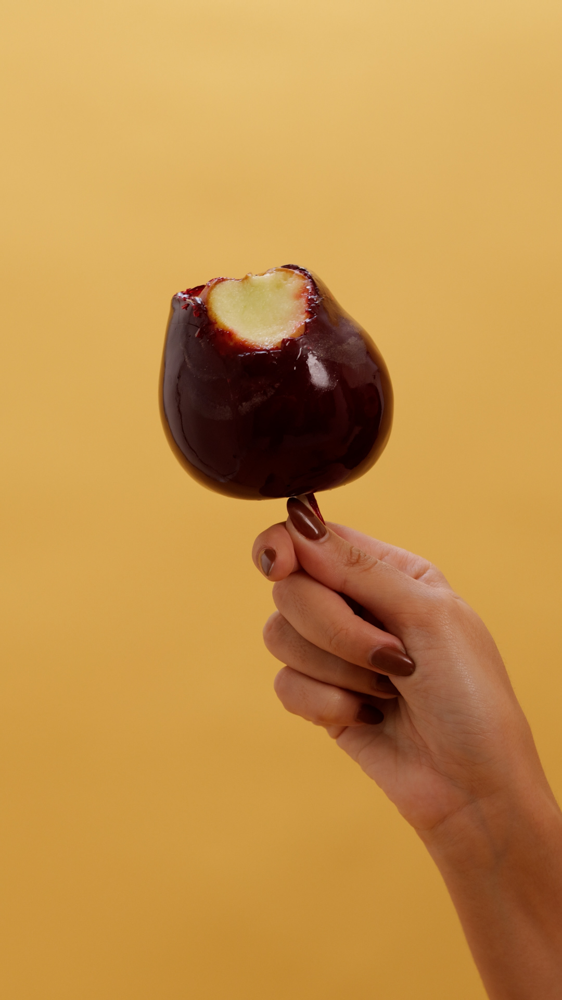

Desenvolvimento de vídeo para redes sociais da Bessie, um salão de beleza express que valoriza a otimização do tempo do cliente. A campanha foi criada para o período de São João, integrando a proposta de agilidade da marca com elementos da cultura nordestina. No vídeo, a modelo aparece realizando diferentes serviços de beleza simultaneamente, caracterizada com referências juninas e interagindo com elementos típicos da festividade, como a maçã do amor, reforçando de forma criativa o conceito express da marca.